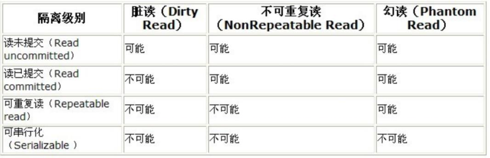

原文连接:https://www.cnblogs.com/xiaoqiang-code/p/11509294.html
之前多篇文章从mysql的底层结构分析、sql语句的分析器以及sql从优化底层分析， 还有工作中常用的sql优化小知识点。面试各大互联网公司必问的mysql锁和事务隔离级别，这篇文章给你打神助攻，一飞冲天。
锁定义
锁是计算机协调多个进程或线程并发访问某一资源的机制。
在数据库中，除了传统的计算资源（如 CPU、RAM、I/O等）的争用以外，数据也是一种需要用户共享的资源。如何保证数据并发访问的一致性、有效性是所有数据库需要解决的问题，锁冲突也是影响数据库并发性能的一个重要因素。
锁分类
- 从性能上分为乐观锁和悲观锁
- 从数据库操作的类型分为读锁和写锁
读锁：针对同一份数据，多个读操作可以同时进行而不会互相影响
写锁：当前写操作没有完成前，它会阻断其他写锁和读锁
从对数据的操作粒度分为表锁和行锁
表锁
每次操作会锁住整张表。
优点：开销小，加锁快，不会出现死锁
缺点：锁的粒度大，发生锁冲突的概率高，并发度最低
--手动增加表锁
lock table 表名称 read(write),表名称2 read(write);
--查看表上加过的锁
show open tables;
--删除表锁
unlock tables;- 加读锁
lock table 表名 read;当前session和其他session都可以读该表；
当前session中插入或者更新锁定的表都会报错，其他session插入或更新则会等待。
- 加写锁
lock table 表名 write;当前session对该表的增删改查都没有问题，其他session对该表的所有操作被阻塞。
- MyISAM表分析
MyISAM在执行查询语句select前，会自动给涉及的所有表加读锁，在执行增删该操作前，会自动给涉及的表加写锁。
对MyISAM表的读操作（加读锁），不会阻碍其他进程对同一表的读请求，但会阻碍对同一表的写请求。只有当读锁释放后，才会执行其他操作的写操作。
对MyISAM表的写操作（加写锁），会阻塞其他进程对同一表的读和写操作，只有当写锁释放后，才会执行其他进程的读写操作。
行锁
每次总锁住一行数据。
优点：锁粒度最小，发生锁冲突概率最低，并发度最高
缺点：开销大、加锁慢，会出现死锁；
行锁支持事务
事务是由一组SQL语句组成的逻辑处理单元，事务具有以下4个属性，通常简称为事务的ACID属性。
- 原子性（Atomicity）：事务是一个原子操作单元，对数据的修改，要么全部执行，要么全部不执行。
- 一致性（Consistent）：在事务开始和完成时，数据都必须保持一致的状态。意味着所有相关的数据规则都必须应用于事务的修改，以保持数据的完整性；事务结束时，所有的内部数据结构也都必须是正确的。
- 隔离性（Isolation）：数据库系统提供一定的隔离机制，保证事务在不受外部并发操作影响的“独立”环境执行。这意味着事务处理过程中的中间状态对外部是不可见的，反之亦然。
- 持久性（Durable）：事务完成之后，它对于数据的修改是永久性的，即使出现系统故障也能保持。
并发事务处理带来的问题
- 更新丢失（Lost Update）
当两个或多个事务选择同一行，然后基于最初选定的值更新改行时，有于每个事务都不知道其他事务的存在，就会发生更i性能问题：最后的更新覆盖了由其他事务所做的更新。 - 脏读（Dirty Reads）
一个事务正在对一条记录做修改，在这个事务完成并提交前，这条记录的数据就处于不一致的状态；这时，另一个事务也来读取同一条记录，如果不加控制，第二个事务读取了这些“脏”数据，并据此进一步的处理，就会产生未提交的数据依赖关系。这种现象被称为“脏读”。
事务A读取到事务B已经修改但未提交的数据，还在这个数据基础上做了修改。此时，如果事务B回滚了，事务A的数据无效，不符合一致性要求。 - 不可重读（Non-Repetable Reads）
一个事务在读取某些数据后的某个时间，再次读取以前读过的数据，却发现起读出的数据已经发生了改变、或某些记录已经被删除。这种现象叫做“不可重读”。
事务A读取到了事务B已经提交的修改数据，不符合隔离性。 - 幻读（Phantom Reads）
一个事务按照相同的查询条件读取以前检索过的数据，却发现某些事务插入了满足其查询条件的新数据，这种现象称为“幻读”。
事务A读取了事务B提交的新增数据，不符合隔离性。
事务隔离级别
脏读、不可重读和幻读，其实都是数据库读一致性的问题，必须由数据库提供一定的事务隔离机制来解决。

数据库的事务隔离级别越严格，并发副作用越小，但付出的代价也越大，因为事务隔离实质上就是事务在一定程度上“串行化”进行，这显然与“并发”是矛盾的。
同时，不同的应用对读一致性和事务隔离程度的要求也是不同的，许多应用对“不可重读”和“幻读”并不敏感，可能更关心数据的并发访问的能力。
还没关注我的公众号？
- 扫文末二维码关注公众号【小强的进阶之路】可领取如下:
- 学习资料： 1T视频教程：涵盖Javaweb前后端教学视频、机器学习/人工智能教学视频、Linux系统教程视频、雅思考试视频教程；
- 100多本书：包含C/C++、Java、Python三门编程语言的经典必看图书、LeetCode题解大全；
- 软件工具：几乎包括你在编程道路上的可能会用到的大部分软件；
- 项目源码：20个JavaWeb项目源码。